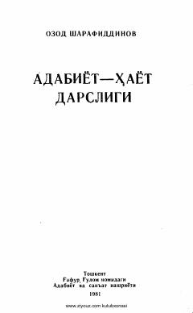

AHAdabiyotning inson hayoti va ma'naviyatidagi o'rniga bag'ishlangan adabiy-tanqidiy risola.
Ushbu kitobda taniqli adabiyotshunos olim Ozod Sharafiddinov badiiy adabiyotning xalq ma'naviy hayotidagi o'rni, uning ahamiyati va jamiyat rivojidagi roli haqida fikr yuritadi. Shuningdek, adabiy-tanqidiy maqolalar orqali kitobxonlarga nima o'qish kerakligi va asarlarni qanday tushunish borasida tavsiyalar beriladi.